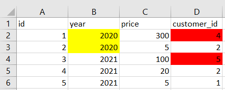
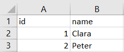
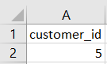
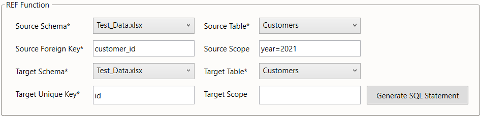

REF
The REF generator generates a SQL query which detects violations of referential identity. That means it detects instances, where an attribute in table A is a reference to a data record in table B, but the referenced record of table B does not exist.
The REF generator may be used directly as a worksheet function =REF().
Rather than doing this, we suggest using the REF dialog from the menu bar, especially when using this function for the first time.
Figure 1: location of the REF ribbon
Example
Consider the database of a retailer with two entities: purchases and customers.
An attribute of each purchase is the customer_id of who carried it out.
If a referenced customer does not exist in the customers table, referential integrity is violated.
This is demonstrated in the below example.
We see that purchases 1 and 3 (marked red) are linked to a customer that is not listed in the customers table.
|  |  |
|---|---|
| Table 1: Purchases | Table 2: Customers |
We may check referential integrity for an entire table or a defined subset thereof.
For instance, in the above example, we may only care about purchases made in 2021.
The framework can account for that via the SCOPE parameter and limit the search for violations to that scope.
As a result, only the customer_id = 5 would be reported, as shown below:

Table 3: Executed SQL query of the REF generator with scope restriction to year = 2021
Settings
The REF generator has eight parameters, four related to the source (the referencing table) and four to the target (the referenced table). The source and target tables are each defined via two parameters:
- the
source schema/target schema(providing for databases where identically named tables may exist in different schemas) - the
source table/target table
The third parameter specifies the referencing and referenced keys, respectively:
- the
source foreign keyis the referencing key of the source table - the
target unique keyis the referenced key of the target table, where it must be unique
When either key is a compound key, the attributes it is composed of must be specified as a comma-separated list. The last parameters define the scope, i.e. the subset of the source / target tables to be included in the check:
- the
source scopedefines the subset of the referencing table to be included in the check - the
target scopedefines the subset of the referenced table to be included in the check
In the below screenshot, we illustrate how the parameters would be chosen to implement the example check described above. We assume, that the data is stored in an Excel workbook "Test_Data.xlsx" with purchases stored in the worksheet "Purchases" and customers stored in a second worksheet named "Customers".

Table 4: REF settings